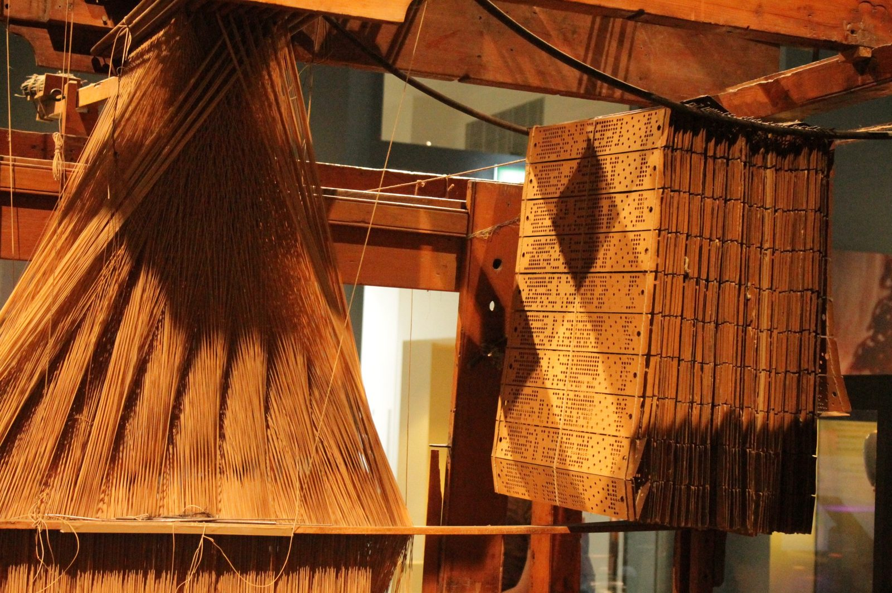
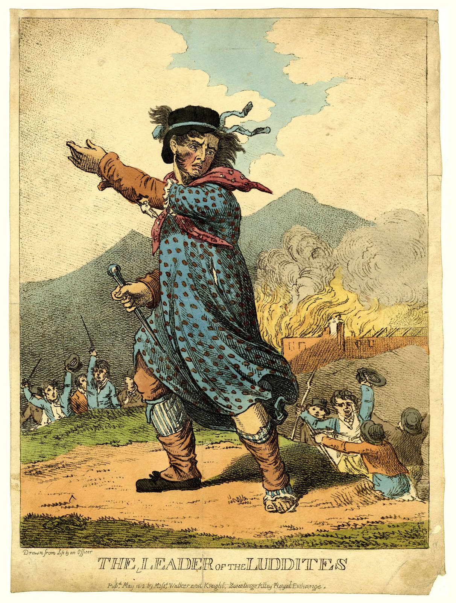
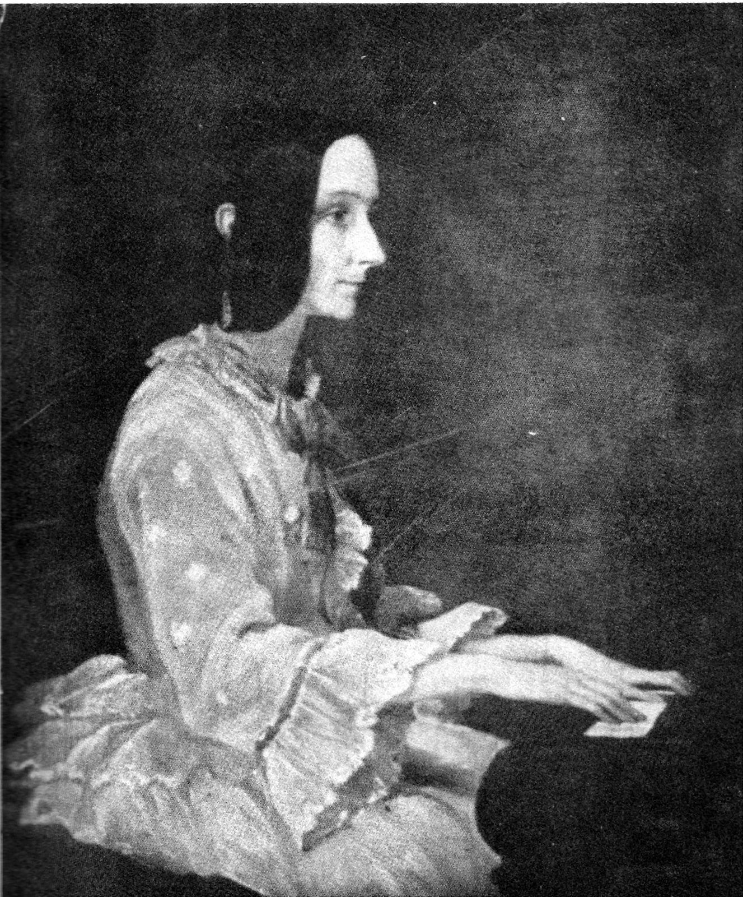
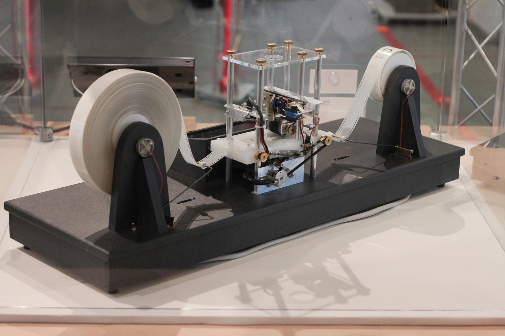

Unit 1 · Lesson 3
The prequel: the idea of a program
Long before computers, a loom followed instructions punched into cards. Where is the program?
The story
Around 1804, in Lyon in France, Joseph-Marie Jacquard made a loom, a machine that weaves cloth, that read its pattern from cards with holes. A hole meant 'lift this thread'; no hole meant 'leave it'. One card for each row of the pattern. Change the cards, and the loom weaves a new pattern.


Between 1811 and 1816, English textile workers called Luddites smashed machines. They were not against technology itself: they protested because factory owners used machines to cut wages and replace skilled workers. Today people ask the same question about artificial intelligence: who wins, and who loses the job?


Charles Babbage designed the Analytical Engine, a calculating machine that would read Jacquard's cards. It had a 'mill', the part that calculates, and a 'store', the memory: a processor and a memory, a century early. He never finished it. In 1843 Ada Lovelace wrote long notes about it, with a method for the machine to calculate a series of numbers. It is often called the first program.


In 1936, at 24, Alan Turing wrote a paper called 'On Computable Numbers'. He imagined a very simple machine: a tape, a head that reads and writes, and a short list of rules. Then he showed that one 'universal' machine could do the work of any other, if you give it the right rules. That is the idea behind every computer and every app.
The science
A program is a list of precise instructions
A program is a list of precise steps that a machine follows exactly, one after the other. An algorithm is the method behind the steps, a list that always ends, like a recipe. In the kitchen, the cook (the CPU) follows the recipe (the program) step by step, without guessing.
- The cook = CPU core
- The metronome = clock (GHz)
- The countertop = cache
- The workbench = RAM
- The pantry = storage (SSD / HDD)
Hardware and software
Hardware is the part you can touch: the loom, the chip, the keyboard, the phone. Software is the instructions: the cards, the program, the app. The same hardware can do new things when you change the software.
The Turing machine: a tape, a head, rules
A tape divided into squares. A head that reads one square. A table of rules like: 'if you read 1, write 0 and move left'. Read the square, follow the rule, write, move, repeat. With the right rules, this paper machine can do any calculation that a computer can do.


Check now
Quick questions. You see the answer at once.
Software is the part of a computer you can touch.
True or false?
Which of these is NOT part of a Turing machine?
- a tape
- a head
- a screen
- a table of rules
In Jacquard's loom, where is the program?
- in the wooden frame
- in the chain of punched cards
- in the threads
Try it
Press Step to watch the head follow the rules. Start with 'add one' on 1011, then try your own tape.
Paper version
Rules for 'add one': start on the LAST digit, state CARRY. Read 1 → write 0, move left, stay in CARRY. Read 0 → write 1, stop. Read blank → write 1, stop. Trace for 1011 (eleven): 1011, head on the 4th digit (1) → write 0, move left · 1010, head on the 3rd digit (1) → write 0, move left · 1000, head on the 2nd digit (0) → write 1, stop · result 1100 (twelve).
Your turn
Exercises
From ★☆☆ (easy) to ★★★ (hard). Use a hint if you are stuck.
-
Exercise 1 ★☆☆
In Jacquard's loom, what did a hole in the card mean?
- stop the loom
- lift this thread
- change colour
-
Exercise 2 ★☆☆
Hardware or software? Match each thing to its kind.
- a keyboard — ?
- a game app — ?
- the pattern on the punched cards — ?
- the loom — ?
-
Exercise 3 ★☆☆
Put these events in time order, from the oldest.
- Ada Lovelace's notes
- Jacquard's card loom
- The Luddites smash machines
- Turing's paper 'On Computable Numbers'
-
Exercise 4 ★★☆
The tape shows 0111 (seven in binary). The machine runs 'add one'. What number, in decimal, is on the tape at the end?
-
Exercise 5 ★★☆
The machine runs 'flip bits' on the tape 1011. What is on the tape at the end?
- 0100
- 1100
- 1011
-
Exercise 6 ★★☆
A Turing machine can only add numbers.
True or false?
-
Exercise 7 ★★★
'Your phone is a universal machine.' Explain this sentence using the words hardware, software and program.
-
Exercise 8 ★★★
The Luddites broke machines. Name one job that machines or AI are changing today, and say who is helped and who is worried.
In one sentence
A program is a list of precise rules; one machine can follow any program.
Words of the chapter
- program
- a list of precise instructions a machine follows programma
- algorithm
- a step-by-step method that always ends algoritmo
- hardware
- the parts of a computer you can touch hardware
- software
- the instructions and programs software
- loom
- a machine that weaves cloth telaio
- tape
- a long strip divided into squares nastro
- Turing machine
- an imaginary machine: a tape, a head, a list of rules macchina di Turing